Anotación y detalles 2D
Este capítulo describe las cotas y las restricciones, las notas de texto, las etiquetas, las habitaciones y las áreas con sus esquemas de color, las vistas de leyenda y las herramientas de dibujo 2D: líneas de detalle, regiones, componentes de detalle, detalles repetidos, aislamiento y vistas 2D libres. Las anotaciones pertenecen a la vista en la que se hacen: una cota colocada en una planta no aparece en otra planta.
Antes de cada clic, cada herramienta muestra lo que crearía donde está el cursor: la cota con su valor, el recuadro de la nota, la etiqueta sobre el elemento bajo el cursor, la región que ocuparía una habitación o un área, la línea, la región, el componente o el aislamiento que se está dibujando.
Cotas
Documentar ▸ Cota contiene las herramientas de cota: Alineada, Lineal, Angular, Radial, Longitud de arco y las cotas de punto Cota de elevación de punto, Coordenada de punto y Pendiente de punto. Funcionan en plantas, secciones, alzados, vistas 2D libres y leyendas. Elija el tipo de cota en el selector de tipos mientras la herramienta está activa; Parámetros de tipo modifica el tipo y, con él, todas las cotas de ese tipo.
Cotas alineadas y lineales
Con Alineada, la franja de opciones ofrece qué parte de un muro se selecciona (Ejes de muro, Caras de muro, Línea central del núcleo, Caras de núcleo) y qué selecciona un clic:
- Referencias: haga clic en las referencias una tras otra (caras o ejes de muro, rejillas, bordes de puertas y ventanas, líneas de detalle, los bordes de los símbolos de una leyenda) y luego haga clic en un punto vacío para colocar allí la línea de cota. Mientras elige, la cadena sigue al cursor. Pulse TAB sobre un muro para recorrer sus referencias.
- Muros completos: un solo clic acota un muro entero. Opciones abre las opciones de acotación automática: Huecos con sus Centros o ambas Anchuras, Muros que se cortan y Rejillas que se cortan. Una rejilla que cae en el extremo de un muro no añade línea de referencia.
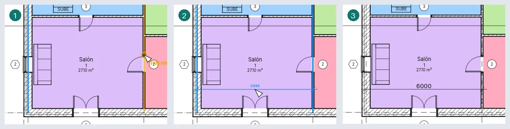
Lineal mide en horizontal o en vertical de la vista, entre puntos como los extremos de un muro: el lugar donde se coloca la línea decide cuál, y la barra espaciadora alterna entre las dos.
Angular mide el ángulo entre dos muros, rejillas o líneas que se encuentran; varias líneas por el mismo punto dan una cadena de ángulos, cada uno con su valor; el último clic elige el sector. Radial y Longitud de arco acotan un arco: haga clic en él y después donde irá la cota.
Modificar una cota
- Seleccione una cota y haga clic en su valor: se abre Texto de cota. Usar valor real conserva la medida y añade texto encima, debajo, delante o detrás; Reemplazar con texto muestra palabras en su lugar (no se admite un número).
- Arrastre el control azul situado bajo el texto para separarlo de la línea; si se devuelve cerca de la línea, encaja en su sitio. Un texto alejado recibe una directriz de arco hacia su segmento; Directriz en la barra de opciones la quita.
- Selección: cotas ▸ Líneas de referencia ▸ Editar líneas de referencia: haga clic en elementos para añadir líneas de referencia, haga clic en una línea de referencia existente para quitarla y luego haga clic en un punto vacío para terminar. Cada línea de referencia de una cota seleccionada tiene un control en su centro: clic derecho en él ▸ Mover línea de referencia y luego haga clic en la nueva referencia; o ▸ Suprimir líneas de referencia. El control en el extremo de una línea de referencia junto al elemento arrastra su separación del elemento; cerca de la separación de otra línea de referencia toma la misma.
- Seleccione un elemento que la cota mide y haga clic en un valor junto a él: escriba una nueva distancia y pulse Intro, y el elemento se mueve: un muro, una rejilla, una puerta o una ventana (a lo largo de su muro) o una línea de detalle.
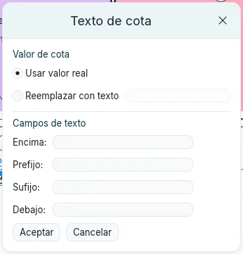
El tipo define la marca (diagonal, flecha rellena o punto), las extensiones de la línea de cota y de las líneas de referencia (Control de línea de referencia: una separación respecto al elemento, o Fijo a línea de cota con su Longitud de línea de referencia), la Distancia de forzado de línea de cota (al colocarla, la línea se ajusta a múltiplos de ella desde lo que mide; 0 la desactiva), el Grosor de línea y el Grosor de línea de marca, el Símbolo de eje, el Patrón de eje y la Marca de eje (Predeterminado es la del tipo) de las líneas de referencia a ejes, el color, el tamaño del texto, el desfase, el fondo, la negrita, la cursiva y el subrayado, las unidades (Formato de unidades abre Formato: Usar parámetros de proyecto, o una unidad con su redondeo, también Personalizada con un Factor de incremento, su símbolo y sus opciones) y, para las cotas lineales, el Tipo de cadena de cotas: Continuo, Línea base (valores apilados desde la primera referencia) u Coordenada (valores desde la primera referencia a lo largo de una línea). Mostrar altura de hueco escribe la altura de una puerta o ventana bajo la anchura medida de jamba a jamba. Los tipos radiales pueden quitar el prefijo R y su marca de centro (Marcas de centro, con su tamaño). Con flechas, un segmento demasiado corto para ellas las lleva por fuera, y la línea sigue más allá por Extensión de línea de cota invertida. Documentar ▸ Cota ▸ Tipos de cota abre los parámetros de tipo del tipo actual de cada familia, para definirlo antes de acotar.
Una cadena de línea base seleccionada muestra en su origen un control de inversión: haga clic en él, o pulse la barra espaciadora, para medir desde el otro extremo. Desfase de línea base en sus propiedades define la distancia entre sus líneas en el papel.
Un tipo por coordenadas tiene Configuración de cotas por coordenadas en sus parámetros de tipo: Editar… abre un cuadro con la Orientación del texto (Alineado con las líneas de referencia o Horizontal), la Posición del texto (En línea con la línea de referencia o Sobre la línea de referencia), la Visibilidad del origen, la Marca de origen (Valor cero, Círculo o la Marca del tipo) y el Estilo de línea de cota (Continua o Ninguna, que deja solo las líneas de referencia y sus marcas).
Cotas temporales
Seleccione un elemento y las cotas temporales muestran sus distancias a las referencias paralelas más cercanas: muros, rejillas, niveles, planos de referencia, bordes de suelos, líneas de separación de habitación y líneas de detalle. Aparecen para cada categoría en cada vista en la que se dibuja el elemento: plantas, secciones, alzados y vistas 3D, donde quedan sobre el nivel del elemento. Un nivel seleccionado muestra, en una sección o un alzado, sus distancias a los niveles de encima y de debajo.
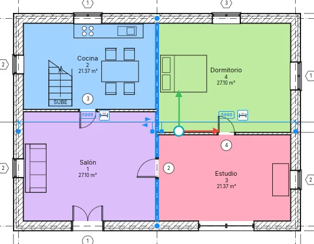
Haga clic en un valor, escriba uno nuevo y pulse Intro para mover el elemento: una longitud puede
llevar su propia unidad (2.5 m), y una fórmula empieza por = (=8000/2). Haga clic en el
símbolo de cota de al lado para hacerla permanente.
Cada línea de referencia tiene un control azul. Arrastre el que está en la referencia a cualquier otra referencia para medir desde allí; o clic derecho ▸ Mover línea de referencia y, después, clic en la nueva referencia. Un clic en un control recorre las referencias del mismo objeto: el eje de un muro, sus caras, las caras del núcleo y la línea central del núcleo. El elemento recuerda las referencias elegidas, para cada vista, y estas siguen a la referencia cuando se mueve; clic derecho ▸ Restablecer referencias vuelve a las más cercanas.
Con varios elementos seleccionados no se muestra ninguna, y la barra de opciones ofrece Activar cotas para mostrarlas para todos los elementos seleccionados.
Al colocar un componente, una puerta o una ventana, las cotas temporales muestran sus distancias a las referencias más cercanas; Tab pasa a las siguientes. Deje el puntero quieto un momento: el elemento espera mientras el puntero va a uno de sus valores, y un clic en el valor permite escribir la distancia a la que se coloca. Al dibujar se muestran la longitud y el ángulo; Girar muestra el ángulo como una cota angular, y un ángulo escrito gira la selección.
Proyecto ▸ Parámetros adicionales ▸ Cotas temporales establece desde dónde miden los muros (Eje, Caras, Línea central del núcleo, Caras del núcleo) y las puertas y ventanas (Eje o Aberturas), para todo el proyecto. El mismo cuadro de diálogo establece el texto de todas las cotas temporales, para la aplicación: de 8 a 20 pt (8 al principio), sobre un fondo transparente u opaco. Junto a los ajustes, una vista previa muestra tres muros acotados como se ha elegido; el interruptor Vista previa del encabezado la oculta, el cuadro conserva su tamaño, y la elección se conserva.
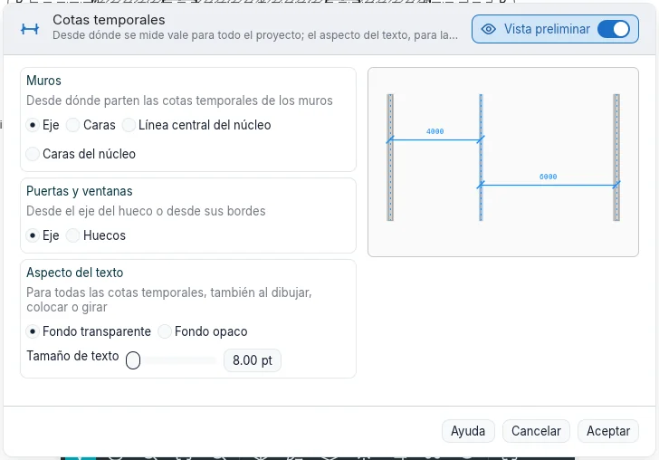
Restricciones
Seleccione una cota: se muestra un candado en cada segmento. Haga clic en él para bloquear el segmento: la distancia se mantiene entonces cuando se mueve cualquiera de los elementos, y se rechaza un movimiento que la rompería. Haga clic de nuevo, o clic derecho en él ▸ Activar/desactivar bloqueo, para desbloquear; clic derecho ▸ Mostrar relacionados selecciona los dos elementos que une el bloqueo. Una cadena de dos segmentos o más muestra EQ: haga clic en ella y las referencias quedan equidistantes, y siguen así cuando una de ellas se mueve. Visualización de igualdad en las propiedades muestra los valores en lugar de EQ.
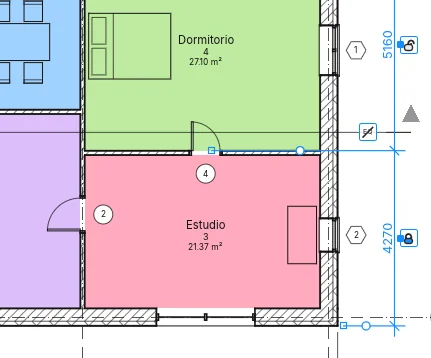
Al seleccionar un elemento que mantiene una restricción, esta se muestra como líneas azules discontinuas, salvo que la categoría Restricciones esté oculta en Visibilidad y gráficos. Eliminar una cota que mantiene una restricción pregunta qué hacer: Aceptar elimina la cota y conserva la restricción; Eliminar elementos elimina ambas. Alinear de Modificar con su candado cerrado también es una restricción.
Cotas de punto
- Cota de elevación de punto: en una planta, haga clic en un suelo, una cubierta o el nivel; en una sección, en cualquier punto. El valor está en metros con su signo.
- Coordenada de punto: las coordenadas norte y este de un punto en una planta.
- Pendiente de punto: la pendiente de un faldón de cubierta en una planta, o de una línea inclinada en una sección, con una flecha que apunta hacia abajo.
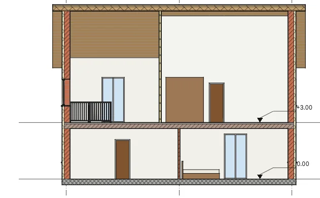
La franja de opciones ofrece Directriz y, con directriz, Codo: sin directriz un clic coloca la cota de punto; con directriz, haga clic en el punto y luego en el texto; con codo, en el punto, el quiebro y el texto. Mientras pasa el cursor, el valor se muestra junto a él. Para las cotas de elevación de punto ofrece además Base relativa: (para un tipo cuyo Origen de elevación es Relativo) y, en plantas, Mostrar elevaciones:: la elevación real, la superior, la inferior o ambas. Para las pendientes de punto, Representación de pendiente: dibuja una Flecha o, en secciones, un Triángulo.
Una cota de punto seleccionada tiene tiradores en su punto, su codo y su texto: arrastre el punto y la cota mide lo que hay allí. Una cota de punto sobre un suelo o una cubierta se elimina con ellos. Al colocarla, Esc suelta la cota a medio colocar; un segundo Esc termina la herramienta.
El tipo de cota de punto define el Indicador de elevación, el Indicador superior y el Indicador inferior (el indicador superior o inferior, luego el de elevación, luego el valor; el … como prefijo/sufijo de cada uno lo pone en cambio después del valor), el Símbolo, Incluir elevación y el Indicador Norte/Sur y el Indicador Este/Oeste de las coordenadas (con Indicador como prefijo/sufijo), y la Longitud de directriz y la Dirección de pendiente (Abajo o Arriba) de las pendientes.
Texto
Documentar ▸ Texto ▸ Texto (TX): haga clic donde irá la nota y escriba; Intro inicia una línea nueva. Un clic
da una nota que no se ajusta; arrastrando se le da un ancho y las palabras se ajustan dentro. Hacer clic en otro
lugar termina la nota, y Esc finaliza la herramienta. Tab al escribir mueve el texto a la siguiente
tabulación. El tamaño del texto es el del papel: la nota conserva su tamaño impreso a cualquier escala de la vista.
El grupo Formato define, antes de colocarla o en una nota seleccionada:
- la directriz: Sin directriz, Un segmento (clic en la punta y luego en la nota), Dos segmentos (punta, codo, nota) o Curva;
- la alineación, izquierda, centro o derecha, y Negrita, Cursiva y Subrayado (Ctrl+B, Ctrl+I, Ctrl+U al escribir o en las notas seleccionadas), que se aplican a toda la nota;
- en una nota seleccionada, Añadir directriz recta a la izquierda y los otros tres botones de directriz, y Eliminar última directriz;
- Conexión a la izquierda y Conexión a la derecha (Arriba, En el centro, Abajo): dónde se unen las directrices a la nota; si se eligen al colocar, se conservan para las notas siguientes.
- Formato de párrafo: los párrafos como lista, con Viñetas, Números, Letras minúsculas o Letras mayúsculas; el texto de cada elemento empieza en la primera tabulación, y las líneas ajustadas quedan con sangría de una.
Cerca de la línea de la esquina de otra nota, una nota nueva encaja en ella, y una línea discontinua lo muestra.
En una nota seleccionada, arrastre la cruz para mover el cuadro (las puntas de las directrices se quedan), los controles redondos laterales para cambiar su ancho y el control de rotación para girarla. Un tirador en medio de cada directriz hace un codo al arrastrarlo, o curva una directriz curva. Haga doble clic dentro para editar las palabras. Sus propiedades incluyen Directrices de arco, Conexión a la izquierda y Conexión a la derecha, y Mantener legible, que nunca la muestra al revés. El tipo de texto define el color (del texto, del borde y de las directrices), el fondo (Opaco tapa lo que hay detrás), Mostrar borde con su desfase, la punta de flecha de la directriz, el Grosor de línea del borde y de las directrices, el tamaño, el Tamaño de tabulación (12,7 mm), la negrita, la cursiva y el subrayado. El botón pequeño Tipos de texto del grupo Texto abre Parámetros de tipo, donde Duplicar… crea un nuevo tipo de texto.
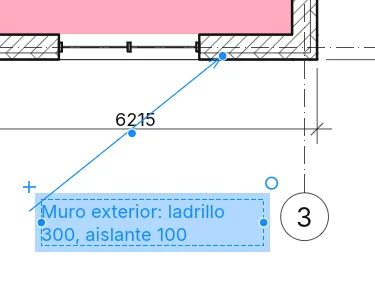
Documentar ▸ Texto ▸ Buscar/Reemplazar busca palabras en las notas de la selección actual, de la vista actual o de todo el proyecto (Ámbito:), con opciones para mayúsculas y palabras completas. Buscar todo lista las coincidencias con la vista en la que están; Buscar siguiente, o un clic en una fila, selecciona esa nota y muestra su texto completo en Contexto. Reemplazar cambia la coincidencia resaltada (la primera si no hay ninguna), Reemplazar todo todas, y Cerrar cierra el cuadro de diálogo. En las notas seleccionadas también está en Herramientas de su tarjeta.
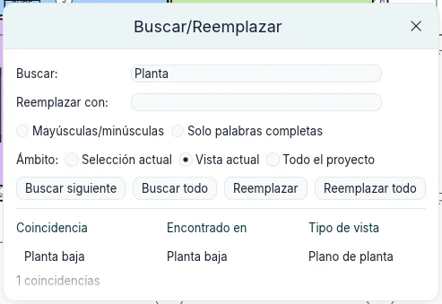
Símbolos
Documentar ▸ Símbolo ▸ Símbolo (SY) coloca un símbolo de anotación 2D en una planta, una sección, una vista 2D
libre o una leyenda: una Flecha norte, un Símbolo de eje, una Flecha de flujo, una Diana o un
Delta de revisión, los dos últimos con un texto propio. El símbolo sigue al cursor antes del clic; la barra
espaciadora lo gira un cuarto de vuelta, o Rotación en la franja de opciones define su ángulo. Con Número de
directrices: mayor que cero, el clic coloca el símbolo y los clics siguientes fijan los extremos de sus
directrices. El tipo define el tamaño del símbolo en el papel y la punta de flecha de sus directrices;
Duplicar… en Parámetros de tipo crea uno nuevo.
Etiquetas
Documentar ▸ Etiqueta ▸ Etiquetar por categoría (TG): pase el cursor sobre un elemento (una puerta, ventana,
muro, habitación o área) y haga clic para etiquetarlo. La franja de opciones define Horizontal o Vertical,
la Directriz y su longitud; la barra espaciadora alterna la orientación, al colocar o en una etiqueta
seleccionada. Las herramientas de puerta y ventana tienen Etiquetar al colocar, de modo que cada nueva puerta
o ventana llega con su etiqueta.
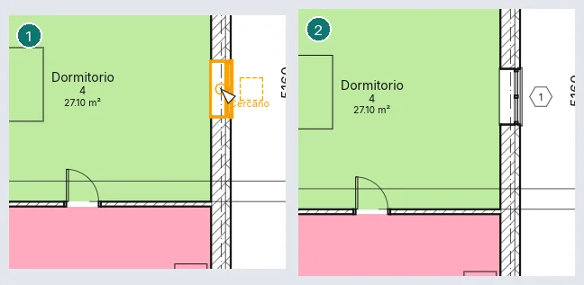
Etiquetar todo abre Etiquetar todos los no etiquetados: marque las categorías, el tipo de etiqueta de cada una, la directriz y la orientación, para todos los elementos de la vista o solo los seleccionados; solo los elementos sin etiqueta reciben una.
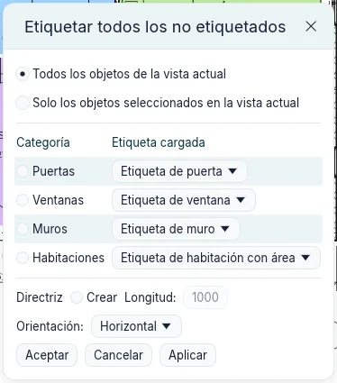
Con directriz, Extremo fijado la termina en el elemento; Extremo libre la termina donde se hizo clic, y una etiqueta seleccionada muestra un tirador para arrastrar ese extremo a cualquier sitio (Extremo de directriz en las propiedades alterna entre los dos). Una etiqueta se alinea con las demás etiquetas de su clase mientras se coloca o se arrastra: cerca de la línea del centro de otra etiqueta, encaja en ella, y una línea discontinua lo muestra. Las etiquetas ocultas en la vista (Visibilidad y gráficos) se activan al etiquetar, y el mensaje lo indica.
Haga doble clic en una etiqueta para editar lo que muestra: la marca de una puerta o la marca de tipo de un muro en el sitio; el número y el nombre de una habitación o un área juntos en Editar valores de etiqueta. Una etiqueta admite otro tipo de su propia categoría desde el selector de tipos, y Elegir nuevo anfitrión (grupo Anfitrión) la pasa a otro elemento de la misma categoría. Los tipos de etiqueta de espacio eligen si muestran el número, el área y el volumen. Una etiqueta de espacio o de superficie definida como Patrón conserva un ángulo: gira con Girar, y la barra espaciadora la alinea por turnos con cada muro cercano (Rotación en sus propiedades). Eliminar la etiqueta de una habitación deja la habitación, y el mensaje lo indica.
Habitaciones
Crear ▸ Espacios y superficies ▸ Espacio (RM) y después haga clic dentro de una región cerrada por muros o
separadores de espacios: la habitación la rellena, también alrededor de muros aislados. En la franja de opciones:
- Límite superior y Desfase: la habitación llega a ese nivel más el desfase (4000 mm por defecto); un nivel más alto da una habitación de varias plantas, como un atrio;
- Etiquetar al colocar, activado por defecto, con la orientación y la directriz de la etiqueta;
- Habitación: Nuevo, o una habitación no colocada, para volver a ponerla;
- Resaltar contornos: los muros y separadores que delimitan habitaciones se vuelven naranjas, y el aviso los lista.
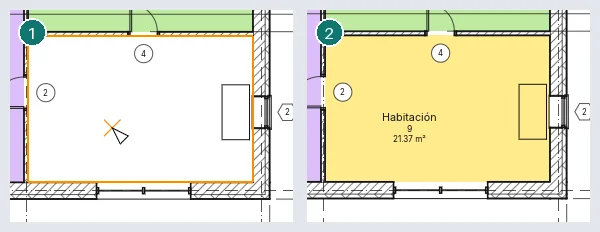
Una habitación colocada en un espacio abierto se conserva con un aviso y toma su forma cuando el espacio se cierra; una segunda habitación en una región ya ocupada se marca como Habitación redundante y no se cuenta dos veces. También se avisa de un número que otra habitación ya tiene, de una habitación más baja que la altura de cálculo (1200 mm), de una base por encima de ella y de un separador de espacios dibujado sobre otro.
Los muros delimitan las habitaciones de un nivel cuando se alzan a su altura de cálculo: 1200 mm mientras Altura de cálculo automática de habitaciones esté marcada en las propiedades del nivel, y si no su Altura de cálculo.
Una sección muestra las habitaciones que corta cuando están seleccionadas o bajo el cursor (TAB alcanza una habitación detrás de otros elementos). Una habitación seleccionada allí tiene una flecha en su parte superior y otra en su base: arrástrelas para cambiar su Desfase de límite y su Desfase en la base.
Separador de espacios dibuja líneas que dividen un espacio en habitaciones sin muros. Un muro delimita habitaciones mientras su propiedad Delimitación de habitación esté activada. Los suelos y cubiertas superiores limitan el volumen de la habitación.
Eliminar una habitación la quita de la planta pero la conserva en el proyecto, No colocada, con sus datos; sus etiquetas se van con ella. Eliminar una etiqueta de espacio deja la habitación. Una etiqueta de espacio arrastrada fuera de su habitación pregunta si Mover a habitación.
Las habitaciones se muestran mediante sus etiquetas. En Visibilidad y gráficos, Habitaciones tiene Relleno interior y Referencia (las líneas en cruz). Configuración ▸ Cálculos de área y volumen se abre en Cálculo: el contorno de la habitación en el acabado del muro, el eje, la capa del núcleo o el eje del núcleo, y Áreas y volúmenes para calcular también volúmenes (por defecto solo áreas; el volumen se mide siempre hasta el acabado del muro). Su segunda pestaña es Esquemas de áreas.
Áreas
Las áreas pertenecen a un esquema de áreas: Área bruta (que no se puede eliminar) y Alquilable vienen con todos los proyectos, y Esquemas de áreas ▸ Nuevo añade más.
- Espacios y superficies ▸ Superficie ▸ Plano de áreas: elija el esquema y los niveles. Responda Sí para dibujar contornos de superficie a lo largo de los muros exteriores, No para dibujarlas usted.
- Superficie ▸ Contorno de superficie: dibuje los contornos o seleccione muros; con las reglas de área activadas, un muro exterior de un plano bruto da su cara exterior.
- Superficie ▸ Superficie: haga clic dentro de los contornos. El área se etiqueta al colocarla; Etiqueta ▸ Etiqueta de superficie la etiqueta después. Si se coloca donde ningún contorno cierra una región, el área se conserva con un aviso y toma su forma cuando lo hagan; una segunda área en una región es Área redundante.
Eliminar un área la deja en el proyecto, no colocada, sin sus etiquetas; Superficie: en la franja de opciones de la herramienta Superficie lista las áreas no colocadas, para volver a ponerlas con un clic.
Esquemas de color
Un esquema de color rellena las habitaciones o áreas de una planta (y las habitaciones que corta una sección) según un valor (nombre, número, departamento, tipo de área) o según rangos de área. Se define en la propiedad Esquema de color de la planta; (ninguno) lo desactiva. Configuración ▸ Esquemas de color (Editar esquema de color) crea y duplica esquemas y edita el título, el parámetro, los valores con su color y visibilidad, su orden y los rangos. Aplicar conserva los cambios y asigna el esquema a la vista con el cuadro de diálogo abierto. Ubicación de la combinación de colores, una propiedad de la vista, dibuja los rellenos en el Fondo (bajo el modelo) o en el Primer plano (sobre el modelo, bajo las anotaciones).
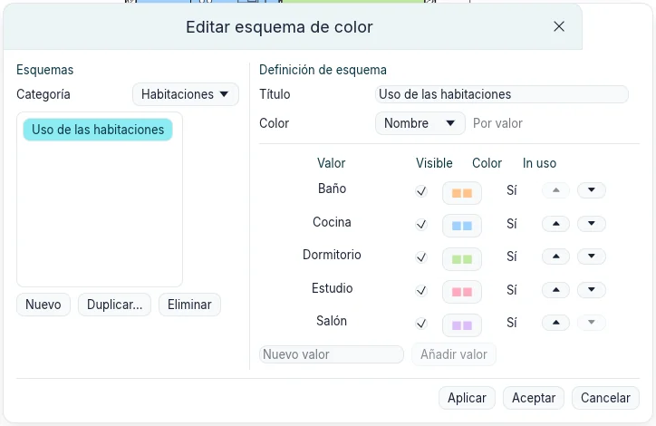
Espacios y superficies ▸ Leyenda coloca la leyenda del esquema de la planta: una muestra y una etiqueta para cada valor. Sus Valores mostrados son Según la vista (los de la planta) o Todo, y Columnas reparte las muestras en varias columnas. Una planta puede tener varias leyendas; eliminar una deja el esquema.
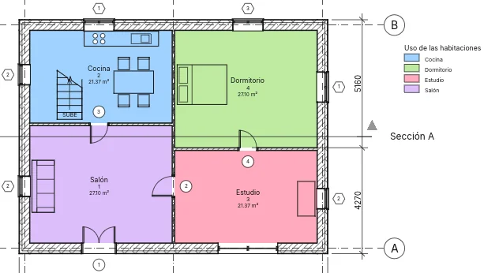
Vistas de leyenda
Vistas ▸ Crear ▸ Leyendas ▸ Leyenda abre Nueva vista de leyenda: un nombre y una escala. La leyenda se abre y se lista en Leyendas en el Índice del proyecto. Documentar ▸ Componente ▸ Componente de leyenda coloca el símbolo de un tipo: en la franja de opciones, el tipo, la Vista desde la que se ve (un muro en planta o sección; un suelo o cubierta en sección o planta; una puerta, ventana o componente en planta, frontal o posterior) y la Longitud de anfitrión, el trozo de muro en el que se aloja una puerta o ventana. Los componentes de leyenda se dibujan con el Detalle de la leyenda, se pueden mover y acotar (los bordes de puertas, ventanas y componentes; los muros, suelos y cubiertas no) y las tablas de planificación no los cuentan. Texto, líneas de detalle y regiones funcionan como en una vista 2D libre. Una leyenda puede colocarse en varias hojas.
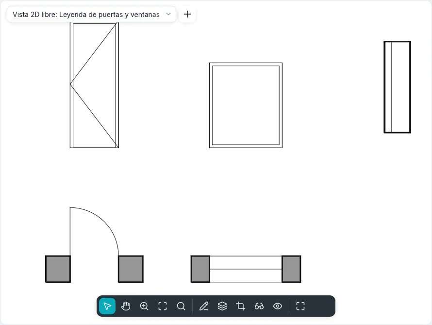
Un tipo arrastrado desde Familias en el Índice del proyecto hasta una leyenda se convierte en su componente de leyenda donde se suelta; un tipo de Familias ▸ Símbolos coloca ese símbolo de anotación. Crear igual, en el menú contextual de un elemento seleccionado, inicia la herramienta que lo coloca con su tipo: para un componente de leyenda, también con su vista y su longitud de anfitrión.
Líneas de detalle y regiones
Documentar ▸ Detalle ▸ Línea de detalle (DL) dibuja líneas solo en la vista abierta, con el estilo de línea del
grupo Estilo de línea. El grupo Dibujar ofrece Línea, Rectángulo, Polígono inscrito,
Polígono circunscrito, Círculo, Arco inicio-fin-radio, Arco por centro y extremos, Arco tangente,
Spline, Elipse, Elipse parcial y Arco de empalme. La franja de opciones muestra lo que admite cada forma:
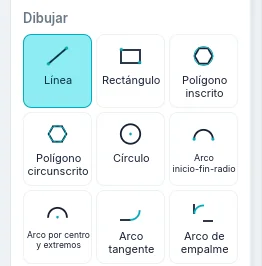
| Opción | Qué hace |
|---|---|
| Continuar | Cada línea (o arco, o spline) empieza donde terminó la anterior; desactivada, cada una es independiente |
| Desfase | Lo que se dibuja se desplaza esa distancia hacia un lado; las líneas encadenadas se unen en sus esquinas |
| Radio | Un círculo, polígono o arco por centro y extremos de ese radio (un círculo requiere un solo clic); las líneas encadenadas y los rectángulos tienen esquinas redondeadas. Desfase se ignora entonces |
| Lados | El número de lados de un polígono |
Después del primer clic, escriba una longitud (una línea, una cuerda) o un radio (círculos, polígonos, arcos, ejes de elipse) y pulse Enter; el valor aparece junto al cursor. Un arco por centro y extremos nunca supera 180°: al pasarlo, gira hacia el otro lado, y un ángulo escrito fija su final. Un arco tangente empieza en el extremo de una línea o arco en el que se hace clic. Shift mantiene horizontales o verticales las líneas y los radios de polígono, gira las cuerdas, los radios de arco y los ejes de elipse en pasos de 45°, y mantiene el barrido de un arco en 90°, 180° o 270°. Esc finaliza una cadena o una spline. Las mismas formas y opciones están en todos los bocetos (suelos, cubiertas, regiones, nubes de revisión, perfiles de muro).
Seleccionar líneas crea una línea de detalle en la cara, el eje o la capa de un muro, en una rejilla u otra línea bajo el cursor (Tab para la siguiente), desplazada por Desfase; con Bloquear la línea queda sobre ella y la sigue cuando se mueve. Arco de empalme selecciona dos líneas y redondea su esquina, con el arco bajo el cursor o del Radio indicado. Una línea de detalle seleccionada tiene tiradores en sus extremos y una cota temporal de su longitud: escriba un valor para cambiarla. El cursor encaja en los extremos, puntos medios, centros e intersecciones de las líneas de detalle de la vista. El extremo de una línea seleccionada sola se arrastra solo y deja la línea vecina donde está; con una cadena seleccionada (Tab), los extremos donde se juntan sus líneas se arrastran juntos, en un solo paso de deshacer.
Región rellenada ▸ Región rellenada abre el modo de boceto: el contorno se traza con todas las formas del grupo Dibujar y con Seleccionar líneas, y los bucles dentro de otro son huecos. Las curvas se conservan como segmentos rectos cortos. Esc finaliza una cadena y conserva el boceto; Modificar y las herramientas de modificación actúan sobre sus líneas. Finalizar modo de edición crea la región con el tipo de región actual, o explica por qué no puede (un contorno abierto o que se cruza). Editar contorno de una región seleccionada abre de nuevo su boceto. El tipo define su patrón de relleno, su color y su fondo (Opaco oculta lo que hay detrás). Región rellenada ▸ Región de máscara crea una región del color del papel que oculta lo que hay debajo. Una región muestra su Área y tiene Comentarios. Una región seleccionada tiene un tirador en cada vértice: arrastre uno para cambiar su forma.
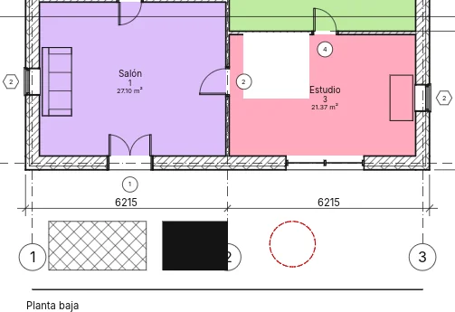
Componentes de detalle, detalles repetidos y aislamiento
- Componente ▸ Componente de detalle: un símbolo 2D (ladrillo, bloque, madera, perfil de acero, panel aislante, línea de rotura) colocado en una vista 2D libre o de detalle; la barra espaciadora lo alinea por turnos con cada muro o línea de detalle cercano al cursor (un cuarto de vuelta si no hay ninguno).
- Componente ▸ Detalle repetido: haga clic en un inicio y un final; el tipo define el componente repetido, la Disposición (llenar el espacio disponible, distancia fija, número fijo, separación máxima), la Separación, Interior y la rotación dentro del patrón. La instancia tiene el Número cuando la disposición es de número fijo.
- Aislamiento: haga clic en dos puntos; Anchura y Desfase (el aislamiento corre esa distancia a la izquierda de los clics) en la franja de opciones; con Seleccionar líneas marcado, un clic en una línea de detalle o en un muro lo dibuja a lo largo de esa línea. La anchura del aislamiento y la relación de abombamiento en sus propiedades. Un aislamiento seleccionado, y un detalle repetido seleccionado, tienen un tirador en cada extremo.
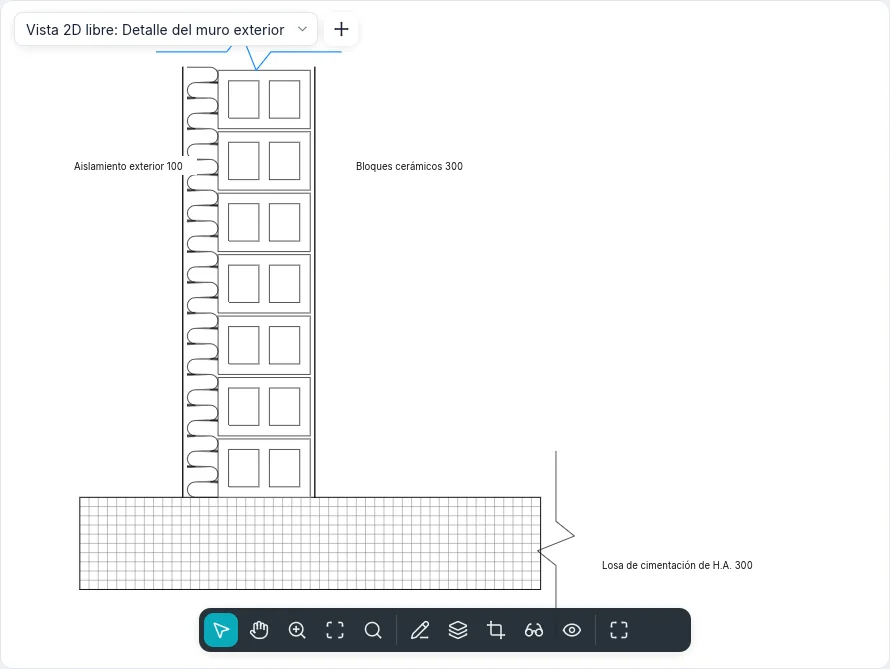
Orden de dibujo
Seleccione solo elementos de detalle: Organizar ofrece Traer al frente, Traer adelante, Enviar al fondo y Enviar atrás. Los elementos de detalle siempre se dibujan sobre el modelo, y uno nuevo queda encima. Deshacer restaura el orden anterior.
Vistas 2D libres
Vistas ▸ Crear ▸ Vista 2D libre pide un nombre y una escala (o una personalizada). La vista se abre y se lista en Vistas 2D libres; todo lo que se dibuja en ella es 2D, sin modelo detrás. Puede ir en una sola hoja. Duplicar vista ▸ Duplicar con detalles copia una vista con sus elementos de detalle, texto, cotas y componentes de leyenda.
Mostrar modelo en las propiedades de una planta, una sección o una vista de detalle dibuja el modelo Normal, en Medio tono (atenuado bajo los detalles) o no lo dibuja (No mostrar), dejando los detalles y las anotaciones.
Vistas ▸ Crear ▸ Detalle ampliado con Referencia a otra vista marcada en la franja de opciones dibuja una llamada que apunta a una vista de detalle o 2D libre existente en lugar de crear una nueva: su cabeza nombra esa vista y un doble clic la abre; Vista referenciada en sus propiedades la cambia. En una vista 2D libre la llamada es siempre de este tipo.
Ocultar en escalas menores que en las propiedades de una sección o una llamada oculta su símbolo en las vistas cuya escala es menor, por ejemplo un detalle 1 : 50 que no aparece en la planta 1 : 100.
En la línea de comandos
Cada herramienta tiene su comando: dim, lineardim, angulardim, radialdim, arcdim,
spotelevation, text, findreplace, tag, room, roomsep, areaplan, areaboundary,
area, colorscheme, legend, legendview, legendcomponent, detailline, region, mask,
draworder, lock, eq. help seguido de un comando muestra su uso; Atajos de
teclado lista los atajos que se escriben.